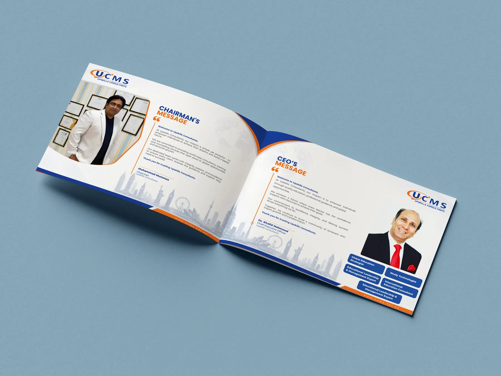
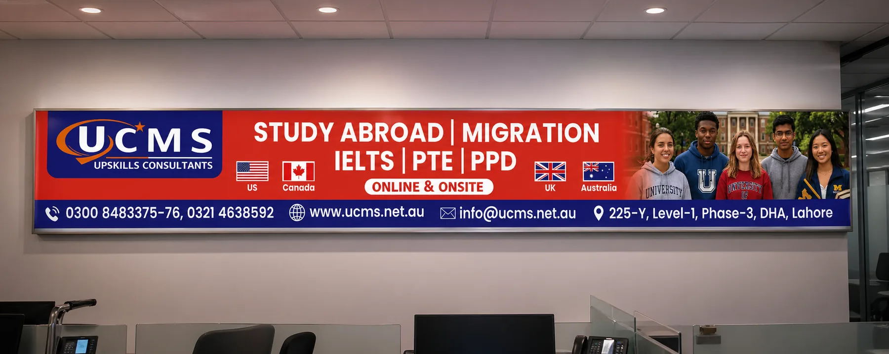
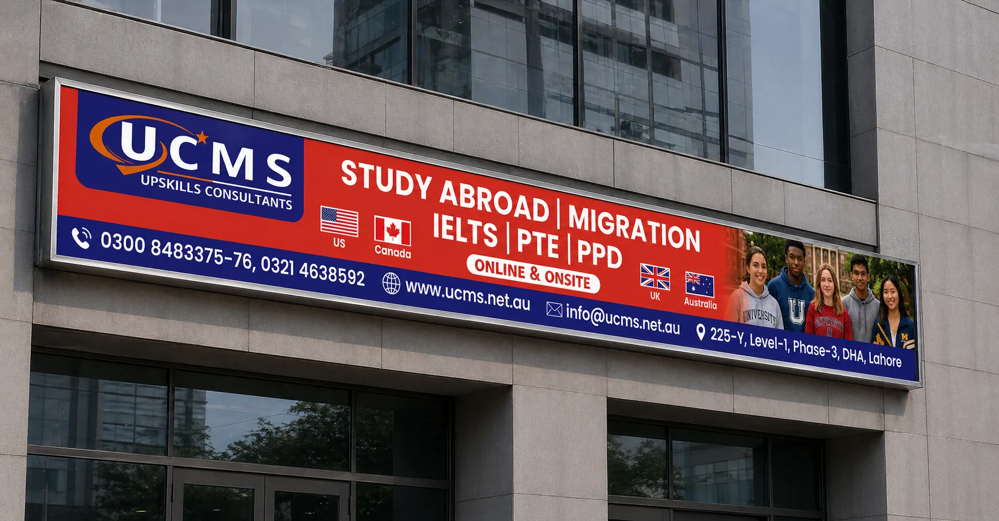
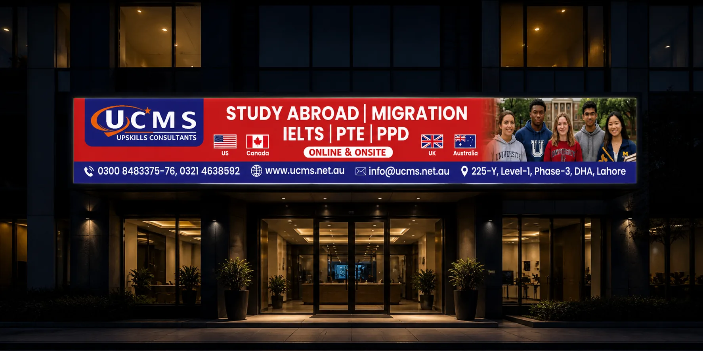
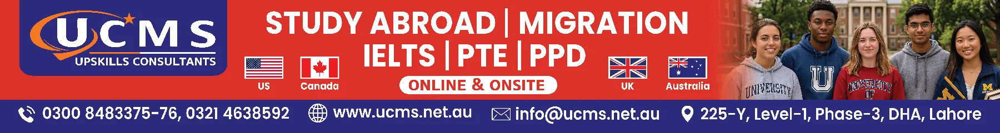
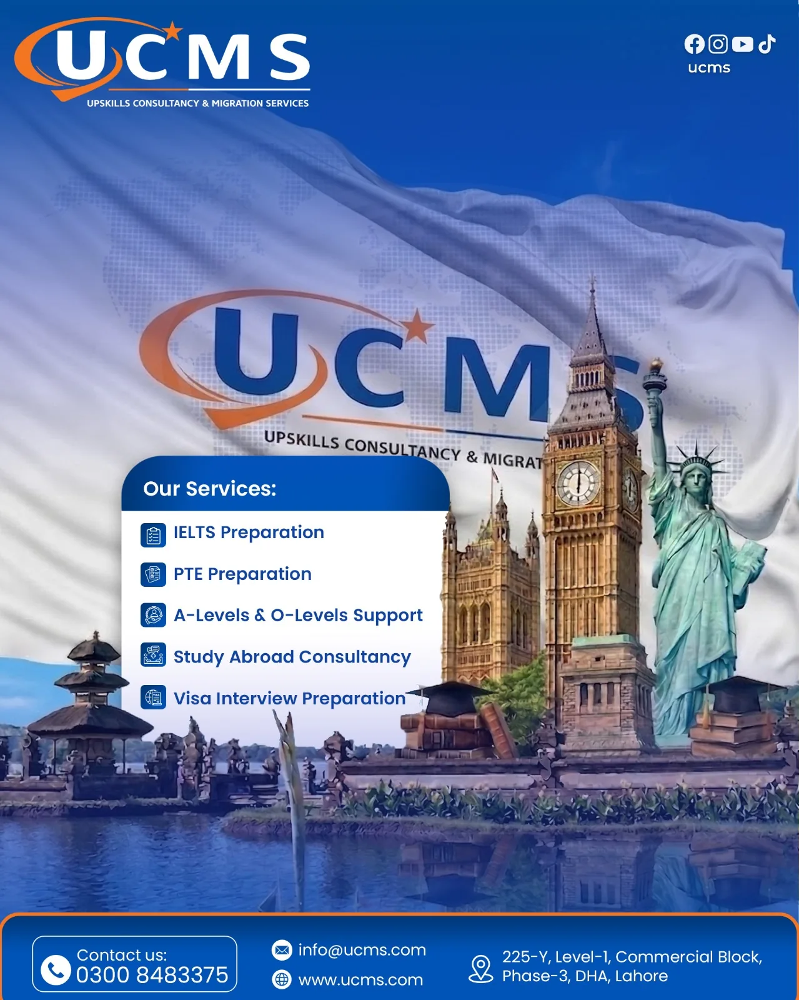
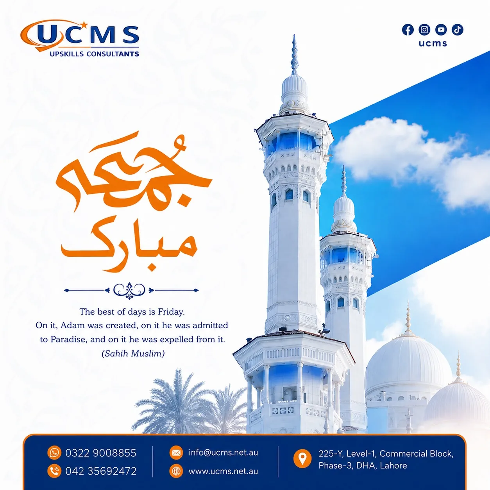
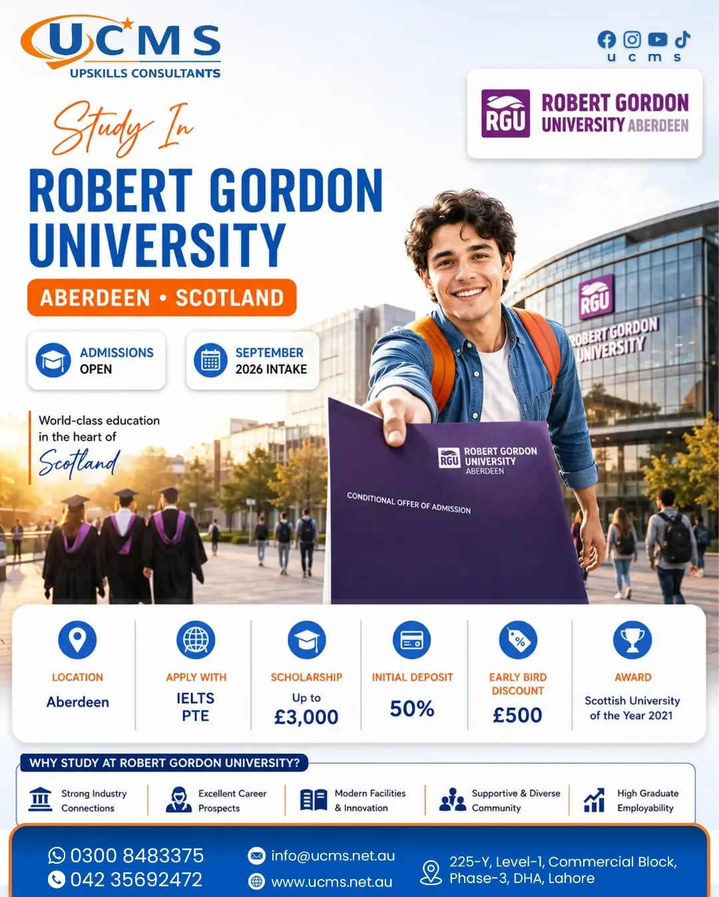
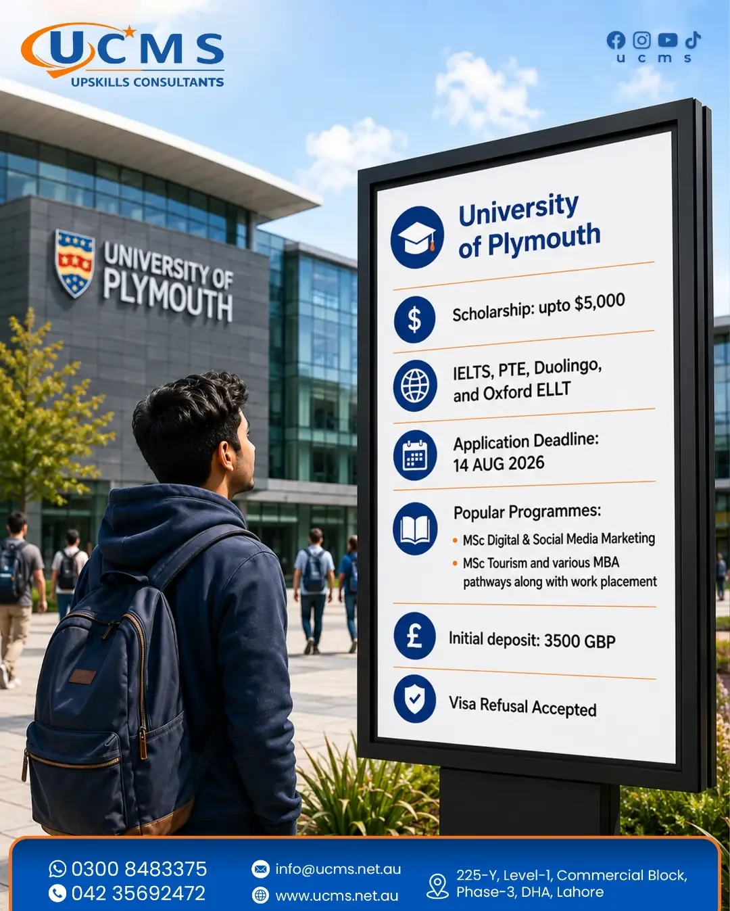

Organizing service topics into useful content themes and campaign-ready messages.
Flagship case study · Social Media + Graphic Design
UCMS
A multi-format communication system for an education and migration consultancy — covering social content, corporate design, marketing material and short-form video.
IndustryEducation & Migration Consultancy
RoleGraphic Design / Social Media
Work IncludedLogo · Profile · Social · Outdoor · Reels
FormatsStatic · Print · Outdoor · Motion
01 / Project overview
One brand across many communication needs.
UCMS communicates several services across education, migration, test preparation and professional support. The design challenge was to keep that variety clear without making the brand feel fragmented. The project therefore needed more than isolated posts — it needed a repeatable visual and content system.
Challenge
Many services, one identity
Different offers and audiences had to remain visually connected.
Approach
Hierarchy + consistency
Brand colors, strong headlines and repeatable layout logic connect the formats.
Execution
Multi-format communication
Corporate, promotional, social and motion content work together as one system.
02 / My role
From content direction to visual execution.
The work shown in this case study covers both design and social-media execution. My contribution is presented by responsibility so the project is easy to understand.
Defining visual hierarchy, image direction and repeatable layouts for different content types.
Designing social posts, company-profile pages, promotional material and campaign creatives.
Preparing static assets and short-form reels for digital communication.
Keeping UCMS recognizable across social, corporate and promotional formats.
Adapting creative assets to practical social and marketing formats.
03 / Social media strategy
Content pillars built around real audience needs.
The content is grouped into clear themes so the feed can stay useful, varied and aligned with the services UCMS offers.
Pillar 01
Education Opportunities
Study options, admissions and university-focused communication.
Pillar 02
Consultancy Services
Migration, documentation and student-support communication.
Pillar 03
Preparation
IELTS/PTE and academic-support messaging.
Pillar 04
Brand Credibility
Company information, expertise and professional service communication.
Pillar 05
Timely Content
Seasonal and awareness content that stays within the brand system.
Workflow
Plan → Create → Adapt
Each theme moves from message planning into platform-ready creative execution.
04 / Logo & identity
Building the UCMS visual starting point.
The UCMS mark combines a strong blue wordmark with an orange orbital swoosh and star accent. The blue gives the identity a professional, trustworthy base, while the orange adds energy and a sense of forward movement. The mark stays simple enough to remain recognizable across social posts, corporate documents and large-format marketing.
Blue wordmarkStrong, professional and easy to recognize.
Orange movementThe swoosh adds energy and visual direction.
Star accentA simple aspirational detail that gives the mark a distinct finish.
05 / Corporate communication
Company profile
The profile extends the identity into a formal business document. Information is structured into clean sections while the blue/orange visual language keeps every page connected to the brand.





07 / Billboard & outdoor
Billboard & promotional design
After the social system, the same visual language is scaled into billboard and promotional formats. Headlines become larger, layouts become simpler and the main message is prioritized for faster reading at distance.




08 / Motion
Reels & short-form video
Motion content extends the same visual language into a faster format. The static feed and reels remain connected through typography, color and message style.
09 / Outcome & value
A more consistent brand across every touchpoint.
The project demonstrates a practical design-and-content workflow: multiple services are communicated through one recognizable system, while each format still performs its own job. It shows experience in social content, corporate design, promotional communication and short-form motion within a single brand environment.
The strength of this project is not one individual post — it is the consistency of the communication system across different formats.
06 / Social media content
Feed-ready creative system
Different topics use different compositions, but the recurring blue/orange palette, type hierarchy and brand elements keep the overall feed recognizable. Click any creative to view it larger.



